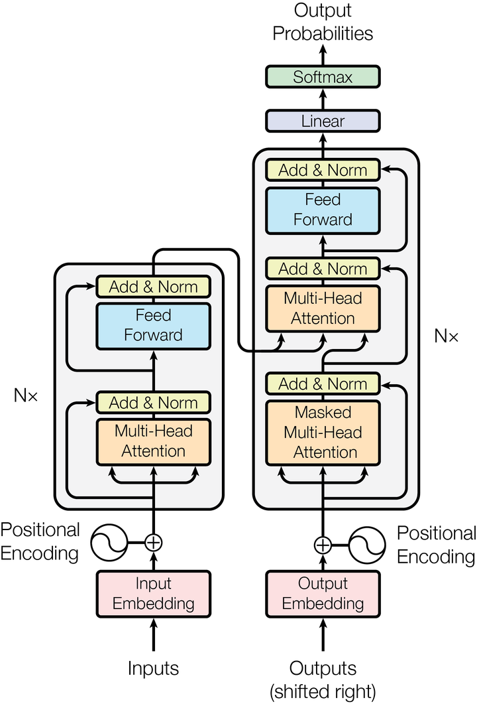

Running a language model inside a kernel

The model is a decoder-only transformer, Qwen3-0.6B by default, quantised to int8 and executed inside the kernel's address space. It is not a service and not a process. The forward pass is a function that the shell, the router or the fault handler could all call directly, and the same page tables are in effect throughout.
What is missing at ring 0
Inference code normally assumes an enormous amount of infrastructure: an allocator, threads, a BLAS library, libm, and an operating system to provide all four. None of it is here, so each one had to be replaced or designed around.
- No libm. Softmax is defined in terms of
exp, RMSNorm needs a square root, GELU needstanh, and none of those exist incore. They are written out, and the boot self-test checks them against known values because a subtly wrongexpfproduces a subtly wrong distribution and no error. - No BLAS. The matrix-vector product is essentially the entire cost of inference, so it is written directly with an AVX2 and FMA path, and falls back to scalar when the CPU does not advertise them.
- No memory to waste. The weights stay in the LoaderData pool they were read into before
ExitBootServicesand are referenced in place. Copying 570 MB onto a heap that is itself only a few hundred megabytes is not an option even if it were a good idea. - No threads. One core, with cooperative yields inside the generation loop so the shell and the clock keep running while a token is being produced.
There is a subtler consequence of running on one core with no operating system underneath: extended CPU state has to be saved on context switch by this kernel, or the YMM registers holding a partly-computed dot product get clobbered by whatever the clock task does next. There is a guard for exactly this, which parks a known pattern in the vector registers across a spin and checks it survived. With extended state saved it never fires; without it, the error count starts climbing the moment two tasks touch floating point.
Where the time goes
Generation is bound by memory bandwidth, not arithmetic. Producing one token requires reading essentially every weight once, so the number that predicts throughput is the size of the model in bytes, not its FLOP count. That is why the 570 MB Qwen3 checkpoint costs about 4.4 times as long per token as the 135 MB SmolLM2 one — almost exactly the size ratio, which is the signature of a bandwidth-bound workload.
Around 155 MB of that 570 is the output classifier: one matrix multiply against the full vocabulary, performed once per token, to produce logits that are then mostly thrown away. When constrained decoding is active the grammar often admits a few dozen tokens out of 150,000, and logits for the rest are computed and discarded. Restricting that final product to the reachable set is therefore the single largest available optimisation, and it is available precisely because the sampler and the grammar are in the same address space.
A feature gate that tested the wrong feature
The AVX2 kernel was gated on avx_enabled && fma and never on avx2 itself. The two are separate CPUID bits and neither implies the other. So the fast path ran on hardware that had FMA without AVX2, where it produced wrong numbers, and refused to run on hardware that had AVX2 without reporting FMA the way the check expected.
The rule that came out of it is worth stating plainly: a feature gate must test the feature the code uses, not a feature that usually travels with it. Numerical code makes this failure especially unpleasant, because wrong-but-finite output looks like output.